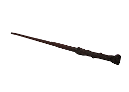

Clique sob um dos brasões

Grifinoria
Casa dos corajosos e leais
O fundador da casa, Godrico Gryffindor A Casa Grifinória enfatiza os traços de coragem, ousadia, bravura e cavalheirismo, portanto, seus membros são geralmente considerados nobres, embora às vezes ao ponto da imprudência.
Lufa-Lufa
Casa dos distraídos e criativos
Sua fundadora foi Helga Lufa-Lufa.Os estudantes da Lufa-Lufa são dedicados, pacientes e honestos. Suas admiráveis características os tornam trabalhadores árduos e modestos, sendo receptivos a todos os demais tipos de bruxos.
Corvinal
Casa dos sábios e ponderados
Fundada por Rowena Ravenclaw, é uma das quatro casas da Escola de Magia e Bruxaria de Hogwarts. Seus membros, comumente, são caracterizados por sua inteligência, aprendizado e sabedoria. Suas cores são o azul e bronze, o animal emblemático é uma águia e sua fantasma patrono é a Dama Cinzenta.
Sonserina
Casa dos destemidos e irreverentes

Fundada por Salazar Slytherin, é uma das quatro casas da Escola de Magia e Bruxaria de Hogwarts. Vários membros da Sonserina possuem uma certa tendência em formar grupos, muitas vezes adquirindo líderes, o que exemplifica ainda mais as qualidades ambiciosas de Slytherin.